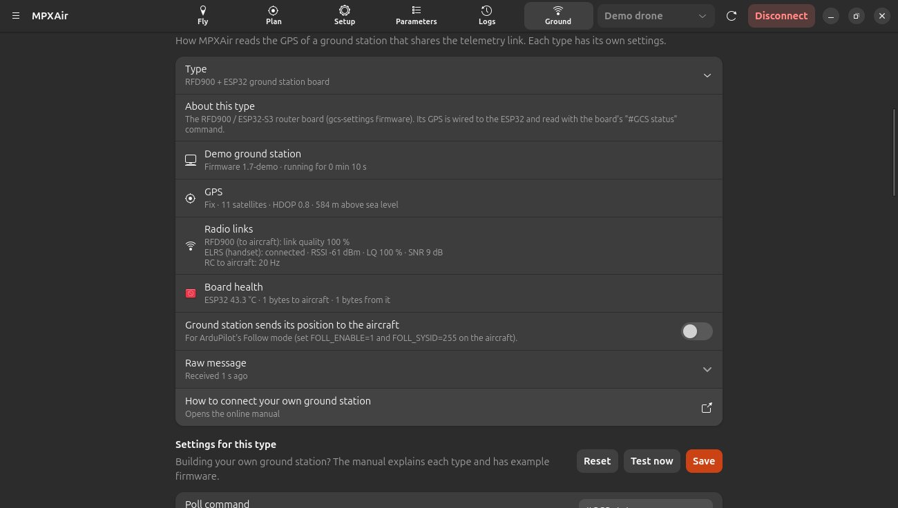

Ground station types
MPXAir can read the GPS of different ground stations that share the telemetry link. Pick yours and adjust its settings.

Choosing a type
Select A ground station on the telemetry link as the ground position, then pick a Type:
| Type | How the GPS arrives |
|---|---|
| RFD900 + ESP32 ground station board | MPXAir sends #GCS status once a second. The board replies with a #GCS {json} line that includes its GPS. See RFD900 + ESP32. |
| GPS mixed into the telemetry | The ground station already sends NMEA sentences ($GPGGA, $GNRMC…) or MAVLink GPS messages on the link. Nothing is sent to it. |
| MAVLink GPS from the ground station | The ground station sends GPS_RAW_INT, GLOBAL_POSITION_INT or GPS_INPUT with its own system ID (255 by default). |
| Custom board — JSON replies | Your own firmware answers a text command with a JSON line, e.g. #GND {"lat":-35.36,"lon":149.16,"alt":584,"sats":11,"fix":3}. |
| Custom board — comma-separated replies | Your firmware sends lines such as $GND,-35.363261,149.165230,584.0,11,3, on request or by itself. |
Building your own? See Connect your own ground station.
The settings for each type
Each type has its own settings, saved separately, so switching types never loses them. Change a value and press Save. Reset puts the defaults back. Test now sends the poll command once, and the reply appears under Raw message, which is the quickest way to check a new board.
Above the settings, MPXAir shows what it understood from the board: the board (name, firmware, uptime), the GPS (fix, satellites, HDOP, altitude) and, for the RFD900 + ESP32 board, its radio links (RFD900 link quality, ELRS RSSI, LQ and SNR, RC rate) and board health (ESP32 temperature, bytes sent and received). Replies damaged by telemetry bytes mixed into the line are repaired where possible.
| Setting | Meaning |
|---|---|
| Poll command | Text sent to ask for the status, e.g. #GCS status. Leave empty if the board sends its position by itself. |
| Start command | Sent once when the link opens (optional), e.g. #GCS hello. |
| Reply prefix | Replies start with this text, e.g. #GCS or $GND,. Everything after it is the data. |
| Line ending | Added after each command: \r, \n or \r\n. |
| Poll every (seconds) | How often the poll command is sent. |
| Latitude / Longitude field | For JSON, a path such as gps.lat. For comma-separated, the column number (the first value after the prefix is 1). |
| Position scale | 0.0000001 when the board sends degrees × 10⁷, 1 for plain degrees. |
| Altitude field / scale | Altitude above sea level. Use scale 0.001 for millimetres, 1 for metres. |
| Satellites, Fix, HDOP fields | Optional. Fix can be true/false, or a number where 0 means no fix. |
| Board name / Firmware field | Optional, shown on the Ground tab. |
| Only use replies that contain | Ignore replies without this field (e.g. answers to other commands). |
| Follow commands | Optional commands that make the board broadcast its position to the aircraft. They switch on the Ground station sends its position to the aircraft switch. |
| System ID (MAVLink types) | Only use GPS messages from this MAVLink system. 0 = any system that isn't the aircraft. |
| Release DTR and RTS | Turn the serial control lines off when connecting. ESP32 boards need this or they may reset. |